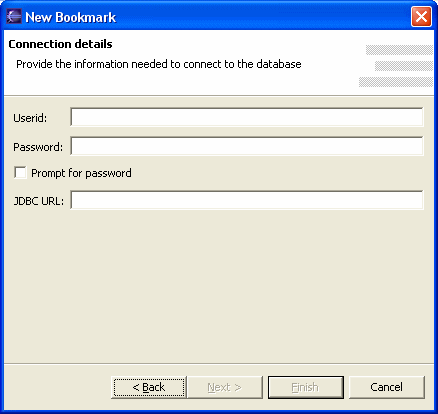

Once a JDBC Driver has been selected, provide the JDBC connection details such as userid, password and JDBC connection URL.
Please note that passwords are stored unsecurely in a QuantumDB configuration file, in plain text. A more secure option might be to select the "Prompt for Password" option. When this option is selected, QuantumDB will prompt the user for a password whenever it tries to connect to the database.
QuantumDB provides extra JDBC URL assistance for some well-known drivers. For example,
if you're using the standard PostgreSQL driver, org.postgresql.Driver, you'll
see the following screen:
When you write the database name in the text box, it'll be substituted instead of the {dbname} variable in the URL, simplifying the URL building task.
Similarly, the standard IBM Informix driver provides the following screen: